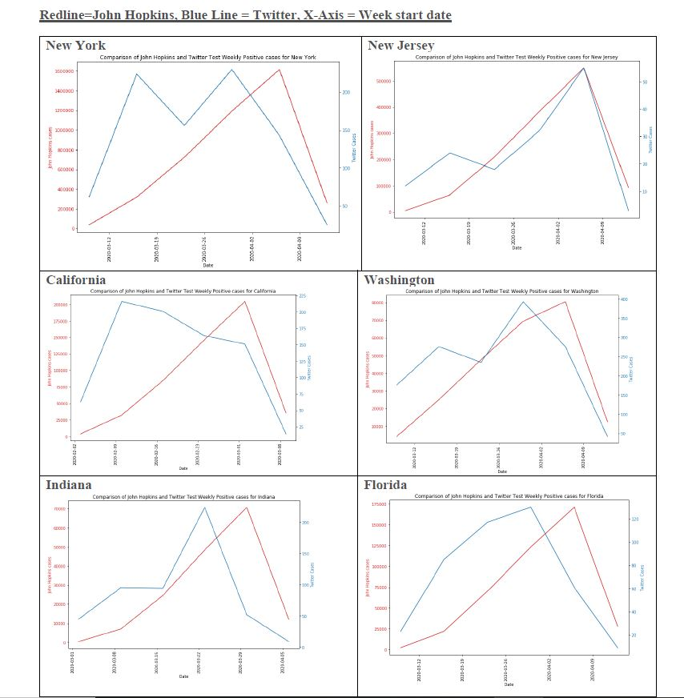

See the demo of the Full Stack Machine Learning
See the demo of automated webscraping of data from website used for subsequent statistical data analysis of downloaded data.
In the sample below, three months of unstructured data - i.e Coronavirus Tweets - were downloaded and the messy tweets were cleaned. The insights show a comparision between Coronavirus trend found from Tweet analysis (blue line) vs official John Hopkins data (red line). They match very closely.

See the demo of Big Data Analytics with Machine Learning.